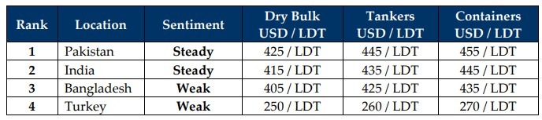

inWeekly Demolition Reports18/08/2025

…but misery clearly doesn’t. We’re already inserting September tides for 2025 into the GMS Weekly and things that wereexpected to have smoothened out once 2024 had come to pass, clearly have only gotten worse ever since the White House decided tweets are the best way to implement global diplomacy and worse yet, global trade policy. All the tariffs aside, the biggest news of the week came between the meeting of President Putin with Trump in Alaska as global markets keenly await the outcome of their “talks” in order to ease the ongoing drama over oil sanctions and the Ukraine war. In the interim, as top EU leaders also plan to meet with Trump at the White House on Monday and seek a path to end the Ukraine war, oil fell nearly 2% this week closing it out at USD 62.80/barrel even though the easing of sanctions could see oil trade ease in the coming weeks and traders remained bearish about the future.
As oil becomes cheaper and tariffs / sanctions start to hit globally, the Baltic Exchange’s Dry Index saw another week of growth as it rose 0.25% again this week, marking a 7.24% increase just this year and a near 21% growth compared to the same time last year. This clearly highlights how tonnage has been meticulously drip fed to the ship recycling communities all while NB productions continue on, entirely stuffing the seaways of units that have long past their glory days, but are being dragged on by ongoing profitable gains. In the interim, Indian sub-continent ship recycling markets continue to struggle with this ongoing slowdown in the supply of meaningful units not only over these much-anticipated-to-be a busier summer 2025, but even since early 2024 has this situation remained grim. And while we are seeing a decent bit of tonnage coming into the various waterfronts (especially in Pakistan) of late, given how much these markets have suffered over the last 6 consecutive quarters makes the recent spate of recycling deliveries seem like delivering “band aid” to a gun fight rather than offering a hospital-bed as long-term fix to the ongoing problem of an utter lack of tonnage.
Notwithstanding, the “get what you can take” attitude for most in the industry during these harsher times is sweeping the macro reality under the rug as recyclers get busy taking in units and even out prior losses. Moreover, the slower time is also providing the opportunity for non-HKC yards to get their HKC accreditations in order and get compliant with the new regulations, which the imposers of the regulations are themselves having a confusing time handling, with delivery delays becoming the recent norm despite the industry gradually getting accustomed to the changing requirements writ large. Vessel offerings too remain uncertain as prices have declined over the recent past, particularly in a lackluster Bangladesh where steel product continues stockpiling by the week, all while levels in Pakistan and India have seemingly stabilized at the current new lows, which today are about USD 60/LDT lower than the peaks seen earlier in the year when levels in the high USD 400s/LDT were common place. Worse yet, this is over a USD 160/Ton lower than the peaks of Jan 2024. As such, the current focus remains on getting facilities approved for HKC recycling and getting the industry to grips with the new requirements (IHMs, SRPS, SRFPS, ‘ready for recycling’ certs from flag) all while taking in what the market can cough up for recycling. Turkey – Lira, that’s all.
For Week 33 of 2025, GMS Market Rankings / vessel indications are as below.

📄 Download PDF: Ship-recycling-market-insight-Week-33-08-15-2025-Time_Flies.pdfSource: GMS,Inc.https://www.gmsinc.net/gms_new/index.php/web